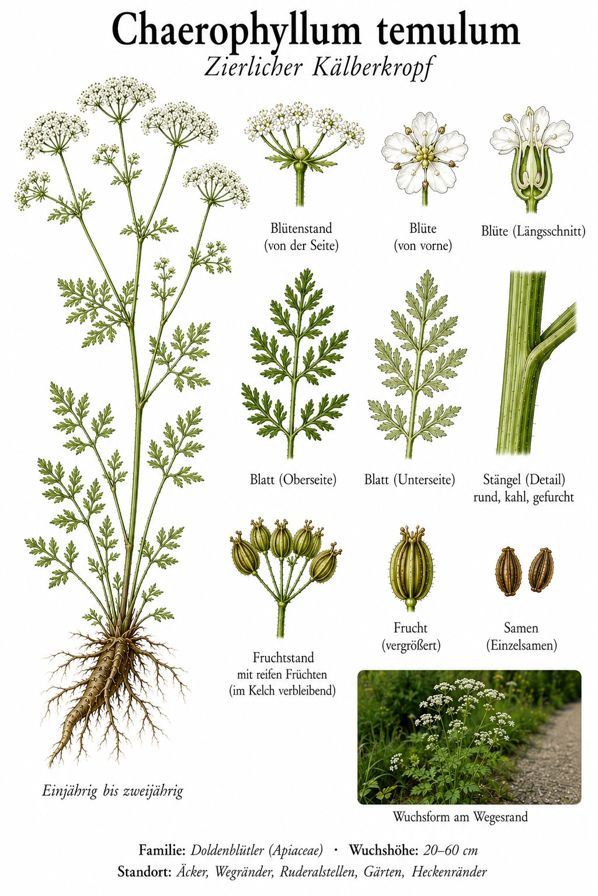
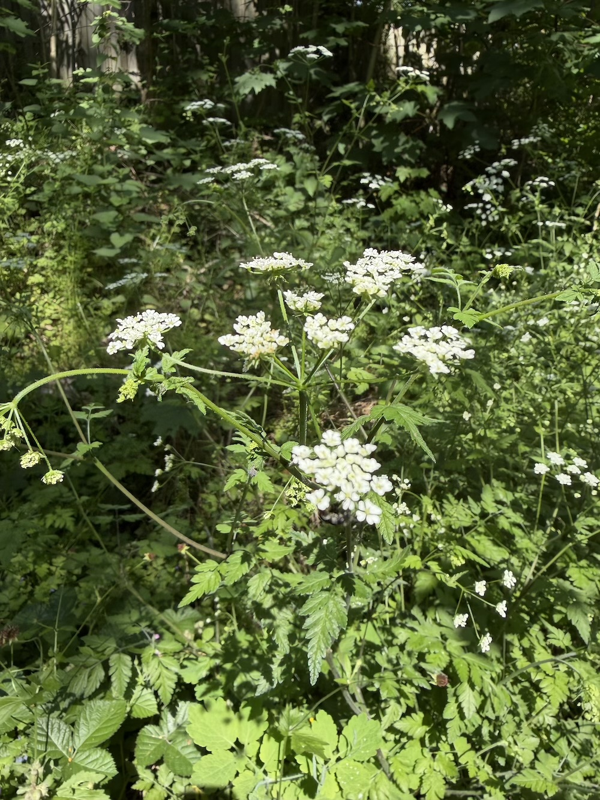
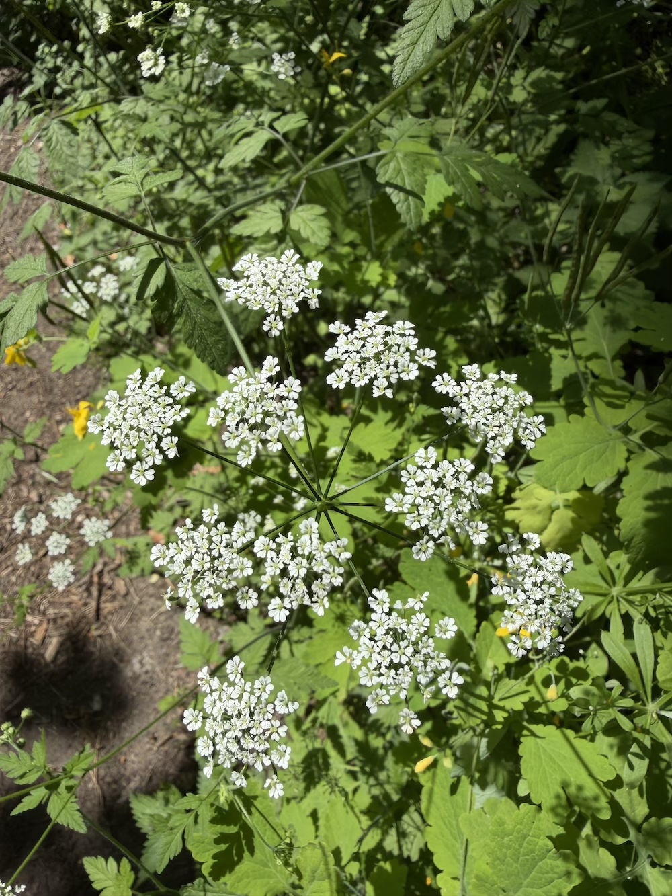

Weiße Doldenwölkchen am halbschattigen Heckenrand – zierlich, aber mit Vorsicht zu genießen.



Schleierblüten am Heckensaum
Ab Mai schweben die kleinen weißen Blüten in zarten Doppeldolden über Hecken, Waldrändern und schattigen Wegrändern. Die fein gefiederten Blätter geben der ganzen Pflanze ein filigranes, fast schleierartiges Aussehen. Der Zierliche Kälberkropf liebt halbschattige, etwas nährstoffreiche Säume – dort bildet er oft lockere Bestände.
Doldenblütler – mit Vorsicht
Sein lateinischer Artname „temulum“ bedeutet so viel wie „betäubend“ oder „taumelig“ – ein Hinweis auf seine leicht giftige Wirkung. Überhaupt ist die Familie der Doldenblütler heikel: Viele Arten sehen sich zum Verwechseln ähnlich, und einige – wie der Gefleckte Schierling – gehören zu den giftigsten Pflanzen Europas. Weiße Dolden also nie ungeprüft sammeln.
Wissenswertes & Merksätze
Name mit Warnung
„Temulum“ heißt „betäubend, taumelig“ – ein deutlicher Hinweis darauf, dass die Pflanze leicht giftig ist.
Doldenblütler-Regel
Bei weißen Dolden gilt immer: erst sicher bestimmen, dann erst anfassen oder gar verzehren. Die Familie enthält tödlich giftige Arten.